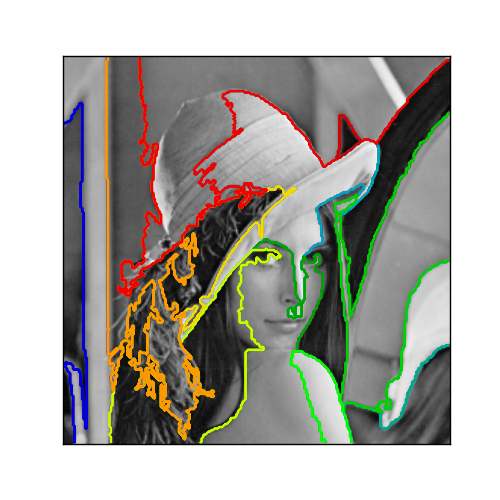

A demo of structured Ward hierarchical clustering on Lena image¶
Compute the segmentation of a 2D image with Ward hierarchical clustering. The clustering is spatially constrained in order for each segmented region to be in one piece.
Python source code: plot_lena_ward_segmentation.py
# Author : Vincent Michel, 2010
# Alexandre Gramfort, 2011
# License: BSD Style.
print __doc__
import time as time
import numpy as np
import scipy as sp
import pylab as pl
from sklearn.feature_extraction.image import grid_to_graph
from sklearn.cluster import Ward
###############################################################################
# Generate data
lena = sp.misc.lena()
# Downsample the image by a factor of 4
lena = lena[::2, ::2] + lena[1::2, ::2] + lena[::2, 1::2] + lena[1::2, 1::2]
X = np.reshape(lena, (-1, 1))
###############################################################################
# Define the structure A of the data. Pixels connected to their neighbors.
connectivity = grid_to_graph(*lena.shape)
###############################################################################
# Compute clustering
print "Compute structured hierarchical clustering..."
st = time.time()
n_clusters = 15 # number of regions
ward = Ward(n_clusters=n_clusters, connectivity=connectivity).fit(X)
label = np.reshape(ward.labels_, lena.shape)
print "Elaspsed time: ", time.time() - st
print "Number of pixels: ", label.size
print "Number of clusters: ", np.unique(label).size
###############################################################################
# Plot the results on an image
pl.figure(figsize=(5, 5))
pl.imshow(lena, cmap=pl.cm.gray)
for l in range(n_clusters):
pl.contour(label == l, contours=1,
colors=[pl.cm.spectral(l/float(n_clusters)), ])
pl.xticks(())
pl.yticks(())
pl.show()